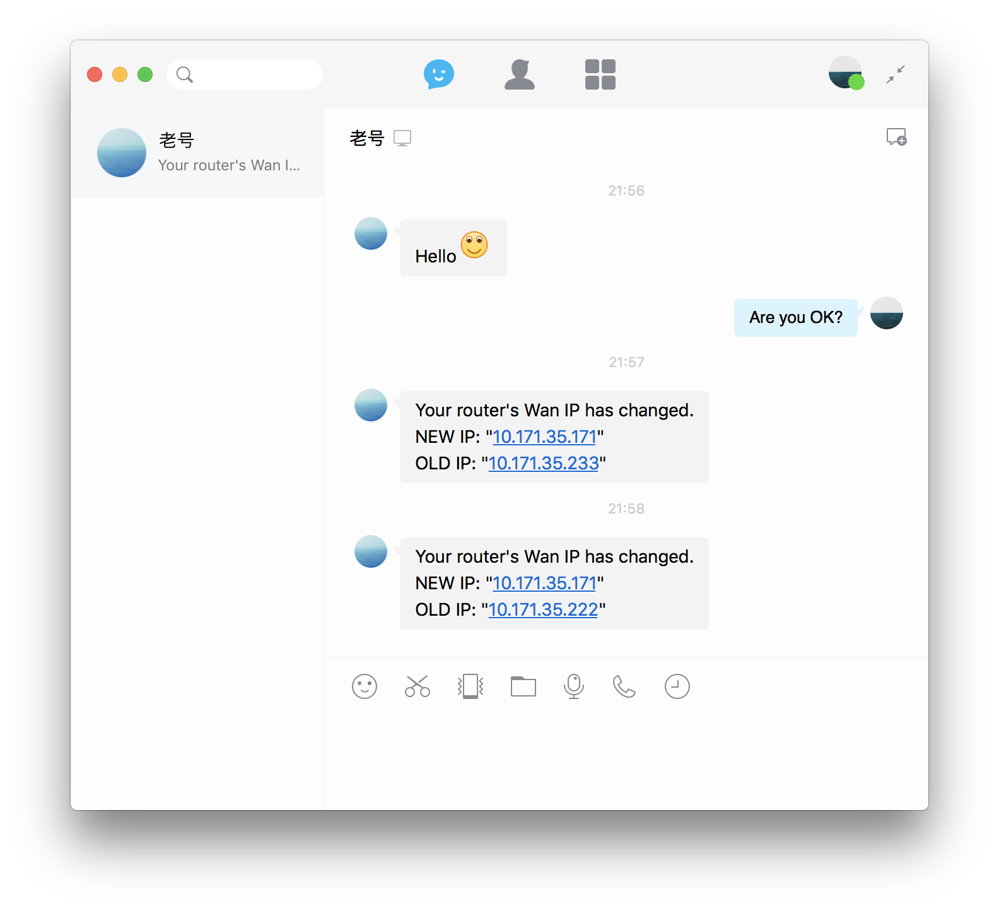

利用 QQbot 实现服务器即时通知我 IP 变动
一个月前搭的那个小服务器，用着挺好。让我头疼的是校园网。我们学校使用 L2TP 的 VPN，每个人单独帐号，幸好是不加密的，用路由器可以解决，小服务器可以愉快地下载文件了。还有 DHCP 的问题，非夏天的时候晚上还得断电。这样一来，每天路由器分配到的 IP 都在变化。早上起来还得看一下路由器的 IP，否则不在寝室的时候就连不上服务器。如何解决呢？
网络状况是这样的：校园网（需 VPN 帐号登录）==> 小米路由器 ==> 小服务器
讲一下为啥需要路由器。一方面是 IP 变动的原因，没路由器那可就真连不上了，有路由器，我就可以给他分配一个静态的 IP，不管怎样，在我的局域网内还是能连上的。另一方面是为了方便电脑、手机和服务器设备之间传送文件。可以躺床上看服务器上的影片。
我希望实现的是路由器 IP 变化的时候，小服务器能够把这个新 IP 告诉我。这样不管怎么变，只要在校园网内就能连上服务器。路由器已经通过 DMZ 绑定了服务器的 IP。
原理
实现这个主要有两点：
- 如何获取路由器分配到的 IP？
- 如何通知我？
通过路由器是可以知道这个 IP 的，但是路由器又无法通知我。通过服务器可以通知我，但是服务器又无法直接获取路由器分配到的 IP。所以关键点就在于如何让服务器获取这个 IP。小米路由器的 ROM 是基于 OpenWrt 的，我的解决办法是，让路由器通过 ssh 连进路由器，然后将网络信息拿出来，之后通知我。
ssh 自动连接：小米官方 ROM 下 /root 目录是只读的，不能免密登录。我使用 expect 命令实现自动登录。
即时通知：其实一开始我是用发邮件的方式的，嫌麻烦没有配置外部邮箱帐号，所以发了几封之后被 Gmail 退回了。然后我想到了前段时间群里讨人厌的 QQ 机器人。现在，每当 IP 变动，机器人给我发消息的时候，超级有成就感。体验不要太好。
其实，服务器异常通知什么的，也可以交给 QQ 机器人，服务器的小管家。所以本文 “真正“ 的题目应该是这：
论 QQ 机器人的正确使用姿势（伪）
步骤
完整的代码在文末。
让小米路由器能够 ssh 连接
安装开发版 ROM，下载官方 ssh 开启工具，按照说明一步一步来就好了。
我也刷过 Pandorabox，然而需要在不能登录 VPN 的情况下，联网安装 L2TP 组件，，人生充满了矛盾（还有小米路由器 APP 在路由器不能联网的情况下登录账号绑定路由器）。手动试了下，没配置成功（20170616 更新：已配置成功）。还是老老实实用小米官方的，毕竟我需要的工具都有。

通过 expect 配置 ssh 自动登录
无非就是登录过程中需要自动输入密码，查了下，expect 可以实现这个功能。expect 不是自带的工具，使用前需要安装。下面的代码可以让我的服务器自动 ssh 到路由器：
spawn ssh $router_user@$router_ip
expect {
"(y/n) " {send "y\r"}
"(yes/no) " {send "yes\r"}
}
expect "password: " {send "$router_passwd\r"}
获取路由器网络信息
一开始是使用 ifconfig 命令获取 IP 的。后来发现小米路由器 /tmp/network.env 里面已经存有网络信息了，包含 IP。那么只要用 scp 命令复制到服务器上即可。结合上面的代码：
/usr/bin/expect <<EOD
spawn ssh $router_user@$router_ip
expect {
"(y/n) " {send "y\r"}
"(yes/no) " {send "yes\r"}
}
expect "password: " {send "$router_passwd\r"}
expect "~#" {send "scp /tmp/network.env $host_user@$host_ip:/tmp\r"}
expect {
"(y/n) " {send "y\r"}
"(yes/no) " {send "yes\r"}
}
expect "password: " {send "$host_passwd\r"}
expect "~#" {send "exit\r"}
expect eof
exit
EOD
之后的工作只要在服务器上完成即可。然后把里面的 IP 抓出来。“如何获取路由器分配到的 IP？” 这一部分的任务已经完成了，完整代码在文末。
搭建 QQbot
感谢这个轮子：QQBot: A conversation robot base on Tencent’s SmartQQ - GitHub
这个项目文档写的非常详细，具体配置的过程不写了。原理就是用一个 QQ 号登录 SmartQQ，然后让代码掌管这个号。需要注意的地方就是登录时候的二维码验证。我在服务器登录了废弃已久的老号，一旦上面的代码发现 IP 有变动，就用这个 QQ 号给我日常使用的 QQ 号发消息。下面是使用截图：

通过 crontab 设置定时任务
设置每隔 2 小时检查 IP 变动：
$ sudo crontab -u <user> -e
# ----------------
0 */2 * * * /path/to/script
# ----------------
代码
搞笑的是，后来我发现，校园网网站上提供了申请静态 IP 的服务。
20170601 更新：这种方法有个硬伤，无法长时间保持在线状态，每次登录成功后的 cookie 会每在 1 ~ 2 天后失效，将被腾讯服务器强制下线。改用邮箱。